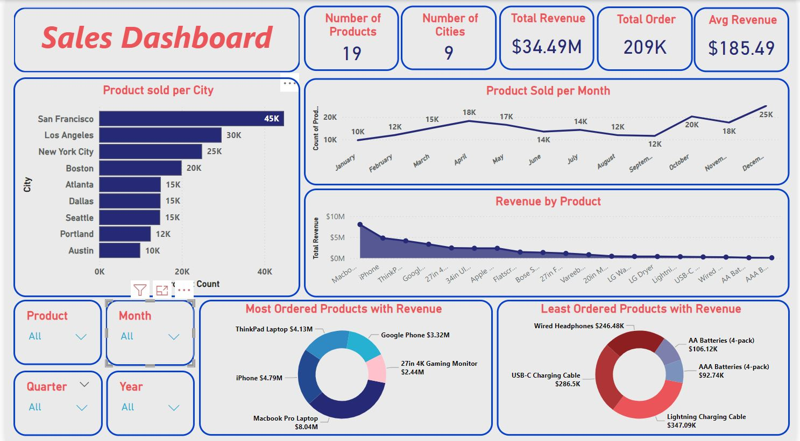

Project Objective
The project aims to extract and visualize sales data insights, focusing on understanding performance metrics and identifying trends. It seeks to reveal consumer behavior patterns and key revenue metrics. The goal is to recognize profitable products, understand cost structures, and guide informed decision-making.
Data Collection and Sources
The data was provided as part of the MeriSKILL internship. The dataset consists of 185,951 rows and 11 columns, including information such as Order ID, Product Name, Quantity ordered, and more. This comprehensive dataset forms the foundation for the subsequent analysis.
Data Pre-processing and Cleaning with MS Excel
The pre-processing phase involved several key steps:
- Checking for blank values
- Splitting date and time
- Converting month numbers to names
- Adjusting data types
- Sorting data from newest to oldest
The refined dataset was then exported into CSV and Excel formats for further analysis.
Exploratory Data Analysis (EDA) using Power BI
EDA using Power BI involved importing the cleaned data and exploring it through various visualizations and an overall dashboard. The analysis included:
- Univariate analysis on product sales and city-wise orders
- Time series analysis on sales trends
- Interactive data filtering using slicers
Dashboard
The image shows a sample sales dashboard displaying key metrics and trends extracted from the sales data analysis.
Outcome
The analysis provided valuable insights into product performance and ordering trends across various cities. The findings, derived from effective data visualization, offered actionable recommendations to guide the business in optimizing its operations and improving its market position.
VIEW PROJECT FILES